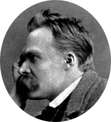

Friedrich Nietzsche (1844-1900) As it is very dangerous to make conclusions about Nietzsche's work, |

Welcome dear guest
Friedrich Nietzsche (1844-1900) As it is very dangerous to make conclusions about Nietzsche's work, |